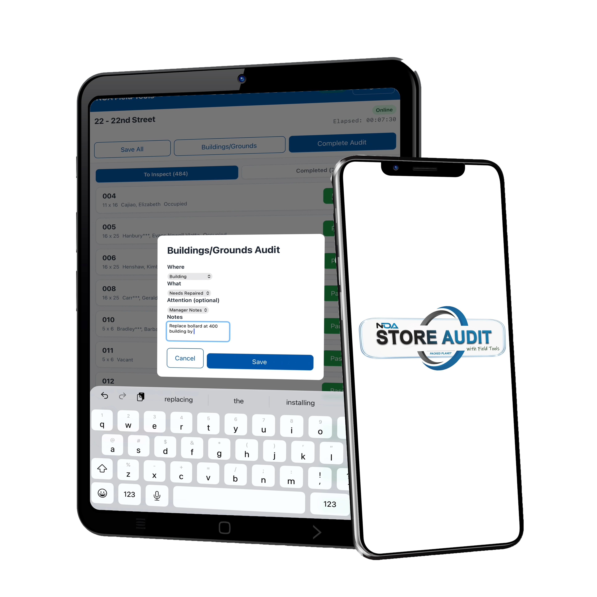

Store Audit — Field Tools
Ditch the Clipboard
Walk, sync, score — NOA takes it from there. Now in Beta
Old Way vs Store Audit
The old way
- Writing notes by hand
- Remembering what you saw
- Duplicating entries
- Scores compiled in spreadsheets
With Store Audit
- Walk the property once
- Tap findings as you go
- Photos + notes on the spot
- Scores auto-compiled in NOA
How It Works
Walk, Sync, Score
- Launch Field Tools on your phone/tablet — QR code or NFC tap
- Complete the walkthru checklist as you walk the property
- Sync back to Salesforce — audits scored and reported automatically
One Walkthru
Everything You Check, One Walk
- Property checks & space audits
- Work orders & maintenance tasks
- Lock checks & vacant unit inspections
Built for the Field
Online and Off
Out of range? Field Tools caches everything and syncs when you're back in coverage.

Next Step
See it in action
Get the details sent straight to you.